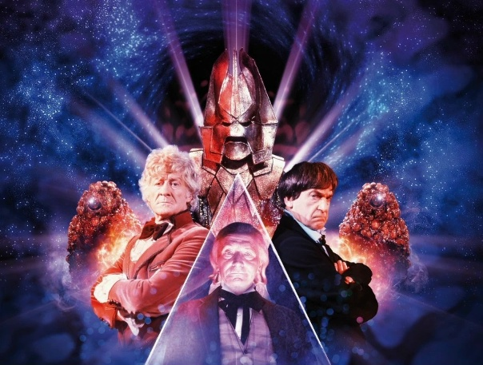

помощник

помощник
| Все эпизоды сохранились в цвете (видеокассета PAL 2") |
|---|
| помощник | помощник |
На Землю начинает проникать нечто из мира антиматерии — Повелитель Времени Омега, один из основателей общества Повелителей Времени, заточённый в анти-вселенной тысячи лет назад. Его силы угрожают не только Земле, но и Галлифрею, и Повелители Времени отправляют на помощь Третьему Доктору его предыдущие воплощения. Первый и Второй Доктора воссоединяются с ним, и троице предстоит проникнуть в мир Омеги. Первый в истории сериала мульти-Докторский спецвыпуск и последняя роль Уильяма Хартнелла.
VHS - август 1991 / сентябрь 2002 | DVD - 24 ноября 2003 |
|---|---|
 DVD-SE+Boxset - 13 февраля 2012 |  Blu-ray (обновленный сезон) - 8 июля 2019 * Версия в нашей группе |
 В 2023 году вышел сериал, где спутники доктора вспоминают свои приключения в консольной комнате "ТАРДИС воспоминаний". По сути идет полный повтор старых серий со вставками постаревших актеров в начале и в конце. В 2023 году вышел сериал, где спутники доктора вспоминают свои приключения в консольной комнате "ТАРДИС воспоминаний". По сути идет полный повтор старых серий со вставками постаревших актеров в начале и в конце.В "Историях ТАРДИС" эта серия является ЧЕТВЕРТОЙ! |
